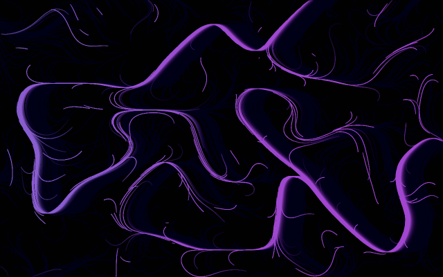 Flow Field Organic ribbons drifting along a simplex-noise vector field. flow Open Copy embed Download Download ships this piece's default settings. Baking from inside the piece captures your own.
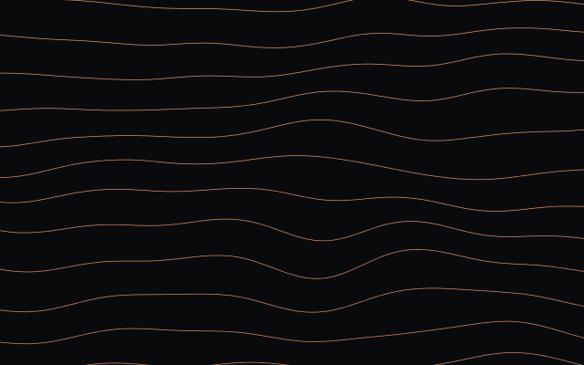 Contour Grid Topographic bands undulating like breathing terrain. geometric Open Copy embed Download Download ships this piece's default settings. Baking from inside the piece captures your own.
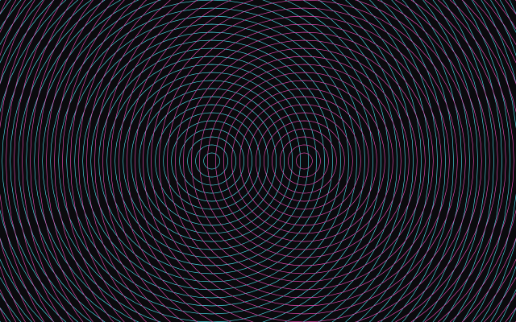 Interference Two concentric ring families crossing into moiré. optical Open Copy embed Download Download ships this piece's default settings. Baking from inside the piece captures your own.
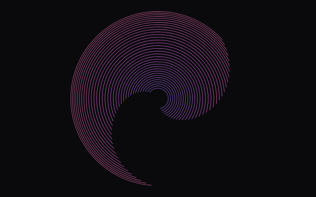 Orbital Veil Concentric arcs turning at different rates around one centre. orb Open Copy embed Download Download ships this piece's default settings. Baking from inside the piece captures your own.
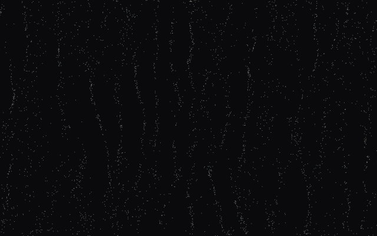 Grain Field Fine drifting grain — the quietest piece, good behind text. grain Open Copy embed Download Download ships this piece's default settings. Baking from inside the piece captures your own.
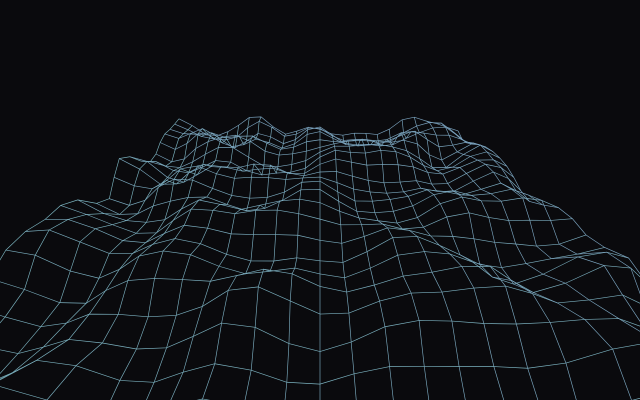 Wireframe Lattice A rigid 3D grid rippling in perspective. geometric3d Open Copy embed Download Download ships this piece's default settings. Baking from inside the piece captures your own.
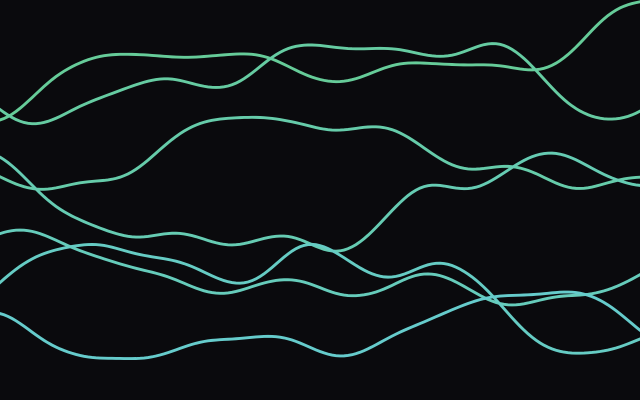 Meridian Seven long ribbons sweeping the full width. flowsparse Open Copy embed Download Download ships this piece's default settings. Baking from inside the piece captures your own.
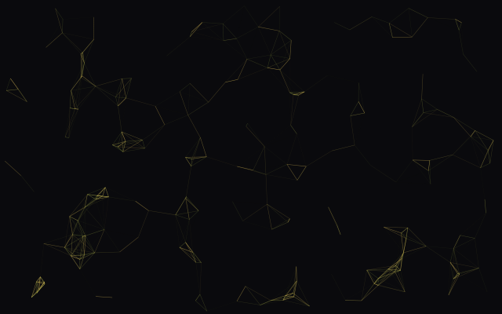 Synapse Drifting nodes wired to their neighbours, pulsing. networkdense Open Copy embed Download Download ships this piece's default settings. Baking from inside the piece captures your own.
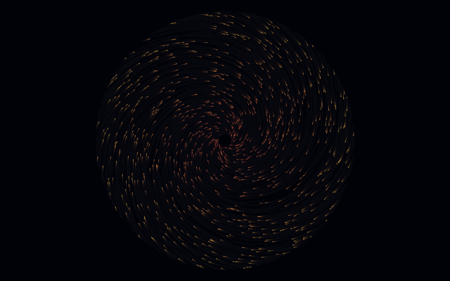 Accretion Matter spiralling inward to a bright core. orbdense Open Copy embed Download Download ships this piece's default settings. Baking from inside the piece captures your own.
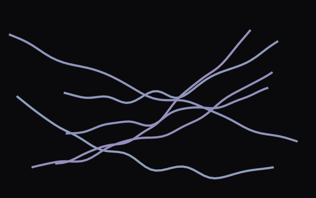 Tether Six heavy cables strung taut and swaying. sparse Open Copy embed Download Download ships this piece's default settings. Baking from inside the piece captures your own.
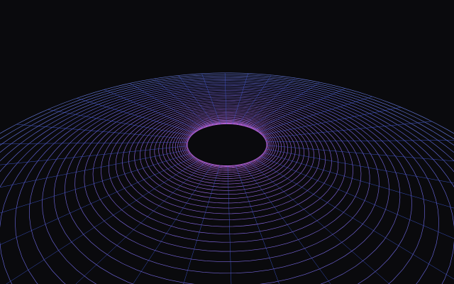 Event Horizon A polar grid bent inward by a gravity well. 3dorb Open Copy embed Download Download ships this piece's default settings. Baking from inside the piece captures your own.